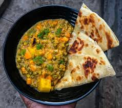

"Chapo Ndengu" recipe

Description
Chapati Ndengu is a popular Kenyan dish that is made by combining chapati and green grams.
It is a delicious and nutritious meal that is easy to prepare and can be enjoyed by the whole family.
Ingredients
- Chapati
- Green grams
- Onions
- Tomatoes
- Garlic
- Ginger
- Coriander
- Oil
- Salt
- Curry powder
Steps
- Boil the green grams until they are soft
- Chop the onions, tomatoes, garlic, ginger and coriander
- Heat oil in a pan and add the onions, garlic and ginger
- Add the tomatoes and cook until they are soft
- Add the curry powder and salt
- Add the boiled green grams and let them cook for a few minutes
- Chapati Ndengu is ready to be served